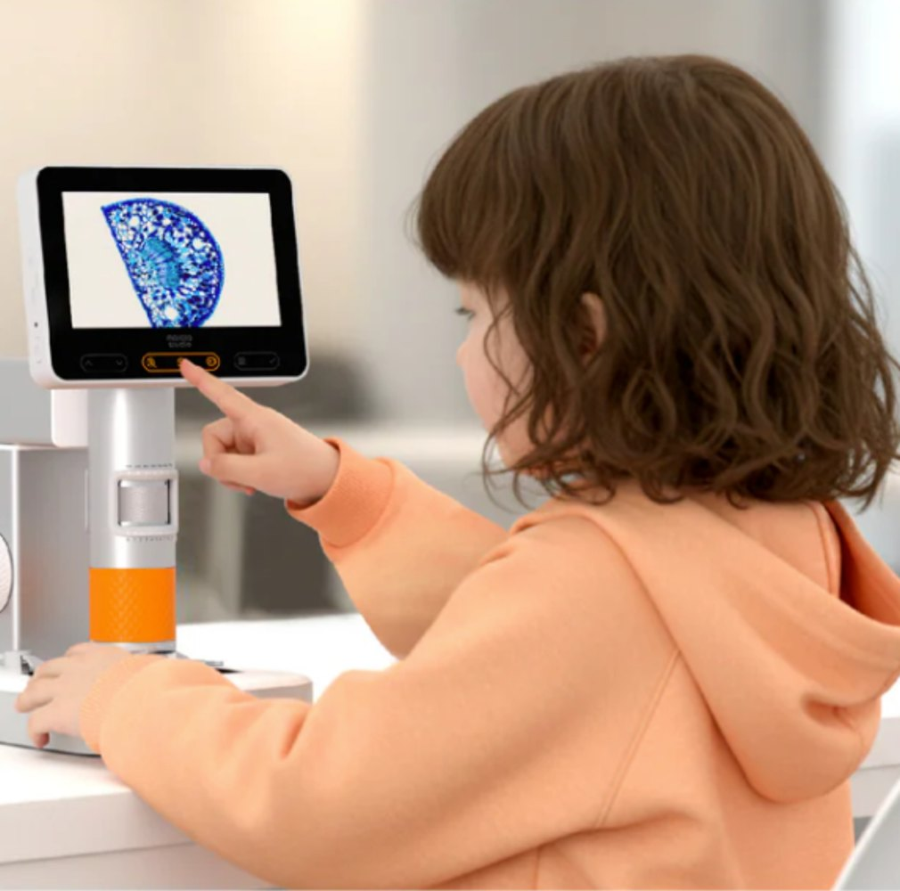
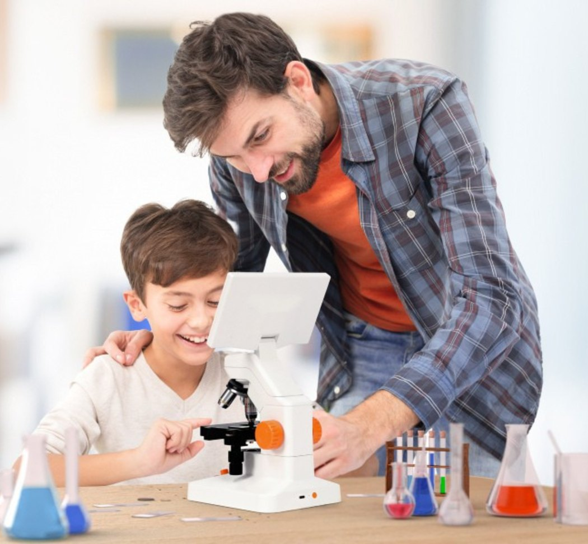

Little
explorer
young
scientist?
MX2-AS
Ages 4-11MT3-2
Ages 11-16

- Use it
- Handheld + stand
- On the desk, 3 lenses
- Screen
- 4.3-inch
- 7-inch
- Zoom
- 1600× digital
- 400× optical
- Slides
- 5 prepared
- 10 + make your own
- Share to
- Tablet, laptop
- Tablet, laptop, TV
- Price
- R 2,980
- R 5,580